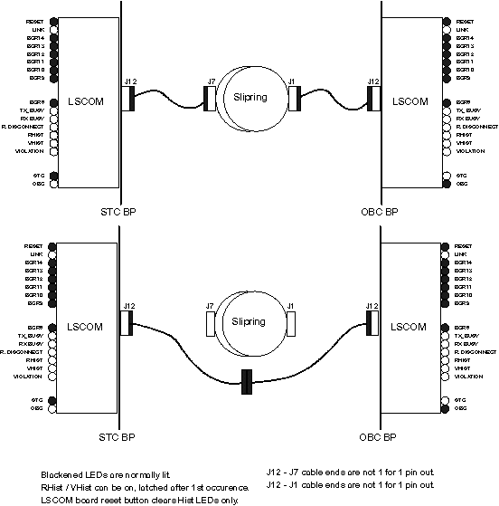

Proprietary to General Electric
Direction 5114045-800, Rev# 10
LightSpeed 4.X Service Information (Advanced)
Proprietary to General Electric |
Ensure cable connections are securely fastened.
Terminator boards mounted correctly with correct screws.
Fiber-optic cables connected and locked.
Damaged components/ring/brushes.
Ground screws on ring # 6.
Frame bonding ground on unused ring # 3.
Ground and filter connections on back side of platter.
Harness shield ground connections.
To isolate rough spots in the rotation, execute an extended version of the ping command while the FE manually rotates the gantry. The output will demonstrate where the rough spots exist. Any cleaning efforts should be concentrated in those areas. This test requires two people: the FE and a person at the console end to indicate where the rough spots occur.
Perform the following command:
insite @ HSA1_SBC0 130: ping obcr
24 bytes from 192.9.224.2: icmp_seq=27. time=20. ms 24 bytes from 192.9.224.2: icmp_seq=28. time=20. ms 24 bytes from 192.9.224.2: icmp_seq=29. time=20. ms 24 bytes from 192.9.224.2: icmp_seq=30. time=20. ms 24 bytes from 192.9.224.2: icmp_seq=31. time=20. ms 24 bytes from 192.9.224.2: icmp_seq=32. time=20. ms 24 bytes from 192.9.224.2: icmp_seq=33. time=20. ms 24 bytes from 192.9.224.2: icmp_seq=34. time=1600. ms 24 bytes from 192.9.224.2: icmp_seq=35. time=18120. ms 24 bytes from 192.9.224.2: icmp_seq=36. time=27180. ms 24 bytes from 192.9.224.2: icmp_seq=37. time=31260. ms 24 bytes from 192.9.224.2: icmp_seq=38. time=35260. ms 24 bytes from 192.9.224.2: icmp_seq=39. time=34260. ms 24 bytes from 192.9.224.2: icmp_seq=40. time=33300. ms 24 bytes from 192.9.224.2: icmp_seq=41. time=22320. ms 24 bytes from 192.9.224.2: icmp_seq=42. time=11320. ms 24 bytes from 192.9.224.2: icmp_seq=43. time=1360. ms 24 bytes from 192.9.224.2: icmp_seq=44. time=20. ms 24 bytes from 192.9.224.2: icmp_seq=45. time=20. ms 24 bytes from 192.9.224.2: icmp_seq=46. time=20. ms 24 bytes from 192.9.224.2: icmp_seq=47. time=20. ms 24 bytes from 192.9.224.2: icmp_seq=48. time=20. ms 24 bytes from 192.9.224.2: icmp_seq=49. time=20. ms
EXPLANATION
The packet internet groper is used to determine if another user is still active. The ping command works by sending out an internet control message protocol (ICMP) echo request. If the destination user is reachable, then an ICMP echo will be returned immediately. The sending user will continue to send this ping/ICMP request until terminated or it times out. Pay particular attention to the response time of the packet to determine network response. In this case, problems with the rings were discovered and marked by the FE during rotation.
SOLUTION
Clean/clear slip rings of debris in vicinity where network response rate degraded.
On the Host Controller, type nbsClient obcr.
While in nbsClient type s sr0 (0 = zero).
At the bottom of the response:
sr0: Timeout Error Statistics: INIT timeouts = 1 DATA timeouts = 0 sr0: Interrupt Statistics: Level 6 interrupts = 171 DAS/AP FIFO full = 0
TAXI link failures = 0 (Violations)
sr0: Miscellaneous Statistics: Black hole occurrences = 0 Total words thrown away = 0 Most words thrown away = 0 Errored DATA frames = 0
sr0: TAXI link failure types: (violations categorized)
Idle TAXI link failures = 0 Rx TAXI link failures = 0 Tx TAXI link failures = 0 Tx/Rx Taxi link failures = 0 *********************************************** * LS Slip-Ring Statistics * ***********************************************
Words received = 15599259 (Multiply by 22 to get bits transferred)
Voting stats = 0 (see below theory description)
Brush Disconnects:
short = 0 (see below theory description)
medium = 0 (see below theory description)
long = 0 (see below theory description)
Type <CTRL + C> to get out of nbsClient.
On the Host Controller, type nbsClient stc.
While in nbsClient type s sr0 (0 = zero).
At the bottom of the response:
sr0: Timeout Error Statistics: INIT timeouts = 1 DATA timeouts = 0 sr0: Interrupt Statistics: Level 6 interrupts = 171 DAS/AP FIFO full = 0
TAXI link failures = 0 (Violations)
sr0: Miscellaneous Statistics: Black hole occurrences = 0 Total words thrown away = 0 Most words thrown away = 0 Errored DATA frames = 0
sr0: TAXI link failure types: (violations categorized)
Idle TAXI link failures = 0 Rx TAXI link failures = 0 Tx TAXI link failures = 0 Tx/Rx Taxi link failures = 0 *********************************************** * LS Slip-Ring Statistics * ***********************************************
Words received = 15599259 (Multiply by 22 to get bits transferred)
Voting stats = 0 (see below theory description)
Brush Disconnects:
short = 0 (see below theory description)
medium = 0 (see below theory description)
long = 0 (see below theory description)
Type <CTRL + C> to get out of nbsClient.
3-wire serial communication:
Inbound
Outbound
Reference
A violation is created in one of three ways:
An invalid command is received.
The 2 command/data bits do not match for a byte.
The parity bit is not correct.
The serial communication is +5V to -5V during normal operation. If the line is disconnected or if the brushes are bouncing then the serial line will be at 0V compared to the reference line. The three types of disconnects indicate different times for the line at 0V.
(75ns < short < 200ns < medium < 4.4us < long)
Each cell is 400ns wide and that cell is measured 5 times in the middle of the cell time (sampled every 25ns from 125ns to 275ns). If all seven samples are not alike then the voting stats are incremented. Should indicate system health, more empirical data is required to determine correlation to BER.
The following output is an example of RCOM/SCOM output. Service personnel should be interested in the “number*” items (e.g. 1*, 2*) as the critical parameters. These items are defined below. Refer to Section 5.4.1for explanations of these parameters.
No. of Rot COM FIFO overruns transmitted : 0 No. of Stat COM FIFO overruns transmitted : 0 No. of Rot COM INIT frames transmitted : 1 No. of Stat COM INIT frames transmitted : 2 No. of Rot COM INITACK frames transmitted : 1 No. of Stat COM INITACK frames transmitted : 1 No. of Rot COM DATA frames transmitted : 412 No. of Stat COM DATA frames transmitted : 419 No. of Rot COM ACK frames transmitted : 420 No. of Stat COM ACK frames transmitted : 412 No. of Rot COM NAK frames transmitted : 0 No. of Stat COM NAK frames transmitted : 0 No. of Rot COM FIFO overruns received : 0 No. of Stat COM FIFO overruns received : 0 No. of Rot COM FIFO underruns : 3 No. of Stat COM FIFO underruns : 2 No. of Rot COM INIT frames received : 1 No. of Stat COM INIT frames received : 2 No. of Rot COM INITACK frames received : 1 No. of Stat COM INITACK frames received : 1 No. of Rot COM DATA frames received : 420 No. of Stat COM DATA frames received : 412 No. of Rot COM ACK frames received : 412 No. of Stat COM ACK frames received : 419 No. of Rot COM NAK frames received : 0 No. of Stat COM NAK frames received : 0 No. of Rot COM frame header checksum errors : 0 No. of Stat COM frame header checksum errors : 0 No. of Rot COM user data checksum errors : 0 No. of Stat COM user data checksum errors : 0 No. of Rot COM DATA frames revd with bad seq number : 0 No. of Stat COM DATA frames revd with bad seq number : 0 No. of Rot COM INIT frame timeouts : 0 No. of Stat COM INIT frame timeouts : 0 No. of Rot COM DATA frame timeouts : 0 No. of Stat COM DATA frame timeouts : 0 No. of Rot COM output errors because intf down : 0 No. of Stat COM output errors because intf down : 0 No. of Rot COM DAS/AP FIFO full conditions : 0 No. of Stat COM DAS/AP FIFO full conditions : 0 No. of Rot COM level 6 interrupts received : 820 No. of Stat COM level 6 interrupts received : 812 No. of Rot COM total data read from FIFO and discarded : 0 No. of Stat COM total data read from FIFO and discarded : 0 No. of Rot COM occurrences of throwing away data : 0 No. of Stat COM occurrences of throwing away data : 0
1* No. of OBC link violations : 3
No. of STC link violations : 0 No. of Rot COM black hole occurrences : 0 No. of Stat COM black hole occurrences : 0 No. of Rot COM link failures when idle : 0 No. of Stat COM link failures when idle : 0 No. of Rot COM link failures when receiver busy : 0 No. of Stat COM link failures when receiver busy : 0
2* No. of Rot COM link failures when transmitter busy : 2
No. of Stat COM link failures when transmitter busy : 0 No. of Rot COM link failures when recvr and trans busy : 0 No. of Stat COM link failures when recvr and trans busy : 0
3* No. of Rot COM bytes received LSW : 163826088
4* No. of Stat COM bytes received LSW : 81211069
No. of Rot COM bytes received MSW : 0 No. of Stat COM bytes received MSW : 0 LED Rot COM Status : 2031 LED Stat COM Status : 2043
5* No. of Rot COM short link disconnects : 59
No. of Stat COM short link disconnects : 0
6* No. of Rot COM medium link disconnects : 196605
No. of Stat COM medium link disconnects : 0
7* No. of Rot COM long link disconnects : 133251
No. of Stat COM long link disconnects : 0
8* No. of Rot COM voting errors : 65738
9* No. of Stat COM voting errors : 931
1* No. of OBC link violations : 3
Link Violations are detected by the receiver of the data only - the transmitter of the data has no idea whether the data is good or bad. Most data corruptions are caused by the weakest link in the data transmission medium, typically the slipring. In this case, the rotating LSCOM receiver is picking bad data bits, so the corrupted data path is from the stationary LSCOM, across signal rings #11 and #12 (ref: Slipring Functional Drawing), and received by the rotating LSCOM. Violations are only counted when real data is being sent across the interface. Violations may be retried by firmware, and may cause “black-hole” occurrences to be logged. Errors that are sensed when there is no data transmission are not counted. In this example, there are no errors detected on the stationary side of the interface.
2* No. of Rot COM link failures when transmitter busy : 2
Of the 3 violations encountered, 2 of those data corruptions were received when the OBC LSCOM was sending data to the stationary side.
3* No. of Rot COM bytes received LSW : 163826088
4* No. of Stat COM bytes received LSW : 81211069
Typically, there is approximately twice as much data sent by the stationary side as received by the stationary side. Keep this in mind when determining “rates of failure occurrence” between the rotating and stationary sides. We can expect 2x as many failures on the rotating side of the system if the bit-error-rates of the inbound and outbound links are equal.
5* No. of Rot COM short link disconnects : 59
6* No. of Rot COM medium link disconnects : 196605
7* No. of Rot COM long link disconnects : 133251
The scanner has the ability to detect and count disconnects on the contact communications rings without necessarily corrupting the data transferred. Short link disconnects are typically within a bit cell (<200nS), Medium link disconnects are between (200nS) and (4400nS), and long link disconnects are above (4400nS). When present, medium and long link disconnects are almost always present because of poor electrical interface between the sliding brass ring surface and the surfaces of the carbon-silver brush tips. Look for excessive brush dust, oils contamination on the ring (oils can seep into the porous brush tips as well), worn brushes, ring scratches, loose cable connections.
8* No. of Rot COM voting errors : 65738
9* No. of Stat COM voting errors : 931
The scanner’s LSCOM circuitry has the ability to take multiple samples within every 400nS bit cell. Each cell is sampled 5 times. Majority vote wins the decision. Non-unanimous “elections” are counted and logged for both the rotating and stationary sides. On a normally operating system, we would expect to see the inbound and outbound link voting stats to ratio accordingly - i.e.: inbound to OBC LSCOM should have about 2x the number of non-unanimous “elections” as the outbound link to the STC LSCOM. The voting errors here show a much higher occurrence on the inbound path to the OBC LSCOM.
FF7F00 - FF7F1E
FF8000 - FF8032
There is no minimum system for the STC.
The minimum system set for the OBC is the LSCOM and CPU.
| NOTE: | For a larger version of this illustration, click on the pdf icon below. |
Media File 1: Full Size Illustration: Normal Indications for Slipring Bypass Procedure

Illustration 1: Normal Indications for Slipring Bypass Procedure
